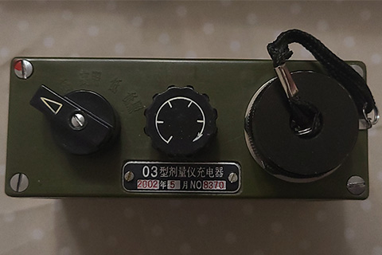

FJJ03 型个人剂量仪
Author: Xiao Yi | Category: Personal Dosimeter电离辐射，顾名思义，在其通过的介质中导致离子（带有电荷的原子）的形成。空气中含有的氮气和氧气的电离导致它们开始导电。在亨利-贝克勒尔和居里夫妇的早期工作中，这一现象已经被用于检测辐射。除其他外，他们当时使用了一个电镜，当辐射使其外壳内的空气电离时，电镜就会逐渐放电。
这一原理在冷战期间被用于建造单兵剂量计，主要用于军队，但也用于核工业。在中国，最常见的是从苏联仿制军用剂量计 1962型个人剂量检查仪 和 83型剂量仪。它们以铝管的形式包含一个微型电容器，首先在一个特殊的设备中充电，然后暴露于辐射后读取结果：
此剂量计有高达800cGy的量程，即 8 Sv；设计用途为检测早期和剩余核爆炸人员所受的γ与中子剂量 ；剂量计有高量程和低量程两个挡位，高量程为 0 - 800 cGy 低量程为 0 - 80 cGy。高量程刻度为 20 cGy 即 0.2 Sv ；低量程刻度为 2 cGy 即 20 mSv 。0.2 Sv 的剂量还不会引起放射病，尽管它可能会引起血液的暂时性变化和男性暂时性不育。但 8 Sv 的剂量存活率很低 0.2Sv 的剂量被认为是在短时间（最多一周）内尽可能安全、快速的摄入量。
点击图片查看大图
另外，由于绝缘缺陷、大气条件和自然辐射背景，这种类型的剂量计会缓慢自放电。
外观
喷涂军绿色电木材质的箱子，顶部有刻有此剂量计的型号、生产日期、编号的铭牌。
正面有一个锁。
内部被分为了三个区域，分别放置：充电器、剂量笔、配件与说明书
剂量笔尺寸
长度和 DISC 差不多我认为这很方便携带，侧面的夹子方便固定在上衣口袋中。
充电器
充电器由一节一号电池供电
充电器操作面板从左至右分别是：选择开关、充电旋钮、充电接口盖
充电器选择开关有五档，关：不能充电 高：高量程充电 高照：高量程充电并能照明；低和低照同上。
为了给剂量笔充电，必须拧下充电插座的保护盖，然后把笔低端电极的塑料套环拧下，将其下端从尽可能插入充电插座。将旋钮旋至你想充电的量程如果有外置光源直接旋至高或低即可，如果没有光源旋至高照或低照充电器会打开背光，此时可以从剂量笔目镜看清仪表盘从而能够控制剂量笔中石英线的位置
在为下一个剂量笔充电之前，必须将旋钮一直转回左侧。40-60 分钟后，必须检查剂量笔指示，并在必要时进行更正。充电必须在没有水和灰尘的条件下进行。充电前忽略将旋钮向左转动会导致剂量计上施加过高的电压并导致剂量计损坏 - 石英线会跳出刻度。
使用方法请参考：Bilibili-FJJ03 型个人剂量仪评测 仅具历史和收藏意义的退役装备
总结
FJJ03 型个人剂量仪目前仅具有历史和收藏意义。它们的最小刻度为 2 cGy 即 20 mSv，最大刻度为 20 cGy 即 0.2 Sv，相比之下，中国所有平均（天然和人工）的年剂量大约为3.1mSv。辐射最强的飞机时钟会产生 5 mR/h 的伽马辐射，因此我们必须使用这样的时钟将充电的 FJJ03剂量笔 照射 400 小时才能捕获 2 cGy。当然，它会更快自放电 - 让我提醒一下你，FJJ03 的自发电荷损失是每天 10%左右
现在可能纯粹是业余爱好者的兴趣,如果我们想控制我们的辐射暴露，有许多比冷战期间大量生产的剂量计更有效的方法，以备核攻击。现在生产的大多数剂量计都有计算总剂量的功能，即使是经济型的剂量计也是如此，当然也有例外。以后我也许将在单独的帖子中聊这个话题。


{kind=link}